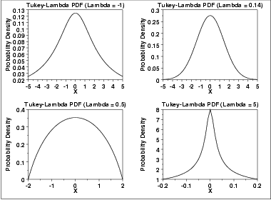
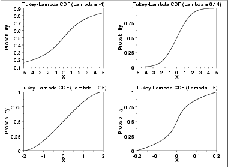
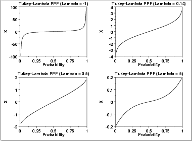

|
1.
Exploratory Data Analysis
1.3. EDA Techniques 1.3.6. Probability Distributions 1.3.6.6. Gallery of Distributions
|
|||||||||||
| Probability Density Function |
The Tukey-Lambda density function does not have a simple, closed form.
It is computed numerically.
The Tukey-Lambda distribution has the shape parameter λ. As with other probability distributions, the Tukey-Lambda distribution can be transformed with a location parameter, μ, and a scale parameter, σ. Since the general form of probability functions can be expressed in terms of the standard distribution, all subsequent formulas in this section are given for the standard form of the function. The following is the plot of the Tukey-Lambda probability density function for four values of λ.  |
||||||||||
| Cumulative Distribution Function |
The Tukey-Lambda distribution does not have a simple, closed form.
It is computed numerically.
The following is the plot of the Tukey-Lambda cumulative distribution function with the same values of λ as the pdf plots above.  |
||||||||||
| Percent Point Function |
The formula for the percent point
function of the standard form of the Tukey-Lambda distribution is
\( G(p;\lambda) = \frac{p^{\lambda} - (1 - p)^{\lambda}} {\lambda} \) The following is the plot of the Tukey-Lambda percent point function with the same values of λ as the pdf plots above.  |
||||||||||
| Other Probability Functions | The Tukey-Lambda distribution is typically used to identify an appropriate distribution (see the comments below) and not used in statistical models directly. For this reason, we omit the formulas, and plots for the hazard, cumulative hazard, survival, and inverse survival functions. We also omit the common statistics and parameter estimation sections. | ||||||||||
| Comments |
The Tukey-Lambda distribution is actually a family of distributions
that can approximate a number of common distributions. For example,
The most common use of this distribution is to generate a Tukey-Lambda PPCC plot of a data set. Based on the ppcc plot, an appropriate model for the data is suggested. For example, if the maximum correlation occurs for a value of λ at or near 0.14, then the data can be modeled with a normal distribution. Values of λ less than this imply a heavy-tailed distribution (with -1 approximating a Cauchy). That is, as the optimal value of λ goes from 0.14 to -1, increasingly heavy tails are implied. Similarly, as the optimal value of λ becomes greater than 0.14, shorter tails are implied. As the Tukey-Lambda distribution is a symmetric distribution, the use of the Tukey-Lambda PPCC plot to determine a reasonable distribution to model the data only applies to symmetric distributions. A histogram of the data should provide evidence as to whether the data can be reasonably modeled with a symmetric distribution. |
||||||||||
| Software | Most general purpose statistical software programs do not support the probability functions for the Tukey-Lambda distribution. | ||||||||||